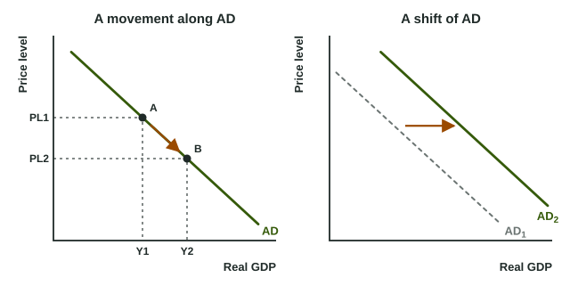

In Unit 1 you drew a demand curve for one good, such as coffee. Macroeconomics asks the same question about the whole economy at once: how much of everything that the country produces do people plan to buy? The answer is aggregate demand (AD), the total real output that households, firms, the government and foreigners plan to buy at each price level.
What aggregate demand adds up
AD is built from the same four kinds of spending you used to measure GDP by the expenditure approach:
- C, consumption: households buying goods and services (groceries, phones, haircuts).
- I, investment: firms buying capital goods (machines, buildings, software) and new homes being built. Buying a stock or a bond is not investment in this sense.
- G, government spending: governments buying goods and services (roads, teachers' work, defense).
- X - M, net exports: foreigners buying our goods, minus what we buy from abroad.
The price level is the average level of prices of all goods and services, measured by a price index such as the GDP deflator. On an AD graph it goes on the vertical axis, and real GDP (real output, Y) goes on the horizontal axis. Label them exactly that way: "price" and "quantity" belong to the market for one good.
Why AD slopes down

The demand curve for coffee slopes down partly because buyers switch to coffee when it gets cheaper than tea. That reason fails for the whole economy: when every price falls together, there is no cheaper domestic good to switch to. AD slopes down for three other reasons, each starting from a lower price level (the left graph):
- Real wealth effect. The same savings account buys more when prices are lower, so households feel richer and consume more.
- Interest rate effect. With lower prices, people need less money for the same purchases, so they borrow less and lend more. Interest rates fall, and firms and households spend more on investment and on big items bought on credit.
- Exchange rate effect. If our price level falls while prices abroad stay the same, our goods get cheaper compared with foreign goods. Exports rise and imports fall, so net exports rise.
Each effect raises real spending because the price level fell. That is a movement along AD, from point A to point B.
What shifts AD
When spending changes for any reason other than the price level, the whole curve shifts (the right graph). More spending at every price level shifts AD right; less shifts it left.
| Component | Shifts AD right when... | Shifts AD left when... |
|---|---|---|
| Consumption (C) | wealth rises (home or stock prices up), consumers grow confident, income taxes are cut | wealth falls, consumers expect hard times, household debt piles up, taxes rise |
| Investment (I) | firms expect higher sales, interest rates fall at a given price level, business taxes are cut, new technology needs new equipment | firms grow pessimistic, interest rates rise at a given price level |
| Government spending (G) | the government buys more goods and services | the government buys less |
| Net exports (X - M) | foreign incomes rise, foreign tastes shift toward our goods | a recession abroad, our households switch to imports |
Worked example: shift or movement? Country X's planned spending, in billions of dollars at an unchanged price level, goes from C = 700, I = 200, G = 250, X = 120, M = 100 last year to C = 700, I = 150, G = 250, X = 140, M = 100 this year.
- Total last year:
. - Total this year:
. - What changed? Investment fell by 50 and net exports rose by 20, so spending fell by 30.
- Shift or movement? The price level did not change, so this is a shift: AD moves left.
Common slip: saying "the price level fell, so AD shifted right". A change in the price level never shifts AD; it moves the economy along it. Only a change in spending at a given price level shifts the curve.
Drawing it the way readers score it
On any AD graph, label the vertical axis Price level (PL) and the horizontal axis Real GDP (Y). Label the curve AD; when it shifts, label the old curve AD1 and the new one AD2 and draw an arrow showing which way it moved. Write the cause next to the arrow ("investment falls"), so the link from the event to the curve is on the page.
Later topics add the supply side of the economy to this graph. Until then, keep the two questions apart: did the price level change (move along AD), or did spending change at every price level (shift AD)?